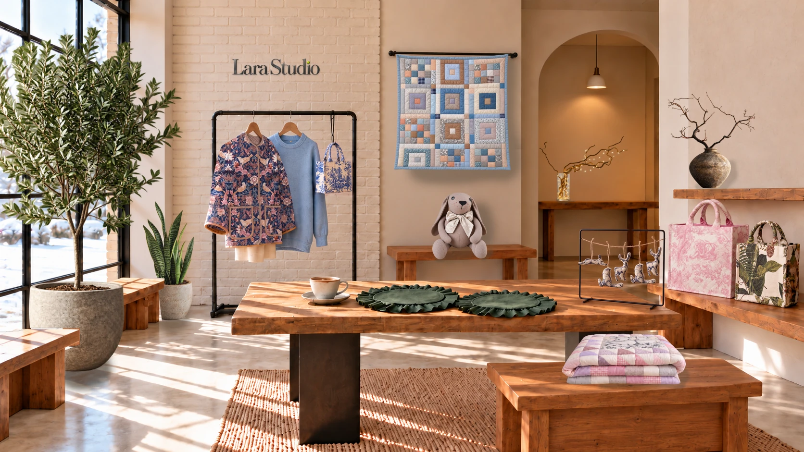

Зимний сезон · Lara Studio
Текстильные объекты
Дизайнерский текстиль
Вещи, выбранные
не случайно.
Для близких. Для своего пространства. Для себя.
Дизайнерские изделия из текстиля и праздничная коллекция Lara Studio — в одной студии. Выберите предмет, чтобы познакомиться с коллекцией.
Открыть новогоднюю капсулу ↗